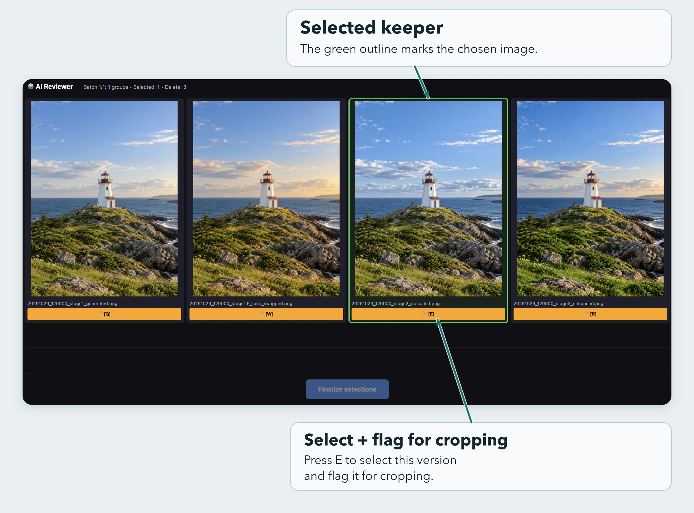
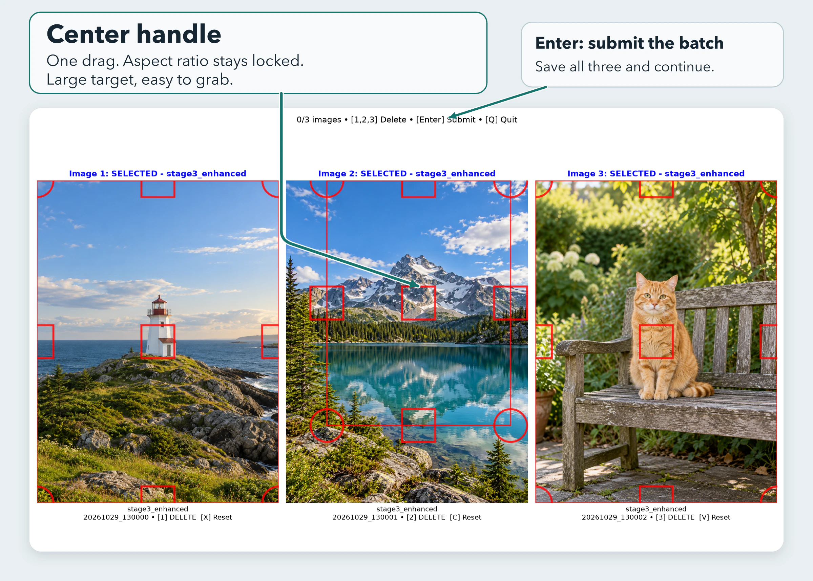

The job usually started with two to four versions of the same image. I compared them in Finder, chose the best version, then cropped, saved and moved it on. Batches quickly grew from about 1,000 images to between 5,000 and 19,000. Repeating the manual sequence at that scale was painful.
Image Workflow let me handle those larger batches with much less repetitive effort. I kept control of which image was best and how it should be framed. The software carried out the repeated handling around those decisions.
From late August through October 2025, the assignment covered 128,200 source images and produced 28,285 finished images. One recorded cropping run produced 391 completed crops in an hour.
The efficiencies at a glance
- Selection: related versions appeared together, and one hotkey chose the keeper and advanced to the next group.
- Less unnecessary work: acceptable images could bypass cropping, while images needing adjustment carried the original selection into the crop queue.
- Less repetitive mouse work: a center handle reduced two corner adjustments to one continuous gesture, with three selected images displayed together.
- Continuous flow: batch submission handled saving and moving, loaded the next images and continued across directories.
- Recovery: decision records, paired metadata, recoverable deletion and original archives made the work traceable and provided ways to restore it.
What I owned
I designed the workflow, defined the interactions, directed implementation and refined the software through daily production use. My decisions came from doing the work: identifying which actions required visual judgment and which repeated steps the software could take over.
I used AI to write the implementation under my direction. I tested the working behavior on real batches, reported failures and checked whether changes solved the problem in continued use. These were tools I built for my own paid content-operations work for a confidential digital-media client.
Carry one visual decision through the workflow
In Finder, choosing the best of three versions still left the file handling: drag the keeper to another folder, or select and delete the unwanted alternatives.
I organized the interface around the comparison itself. Related versions appeared in one row. A hotkey selected the image and brought the next row into view, so my hand could stay on the keyboard through a batch. On submission, the program moved the chosen files and set the unwanted versions aside.
In the later workflow, I separated choosing an image from deciding whether it needed a crop. A good image could go forward unchanged. Another set of hotkeys selected a version and marked that same file for cropping. That avoided finding the chosen image again or forcing every accepted image through an unnecessary editing step.

My actual selection tool, displaying generated sample photographs.
Make the repeated gesture easier
The cropper displayed three selected images together and kept each image's aspect ratio locked. I could make the entire crop with one continuous center-handle drag: tighten the framing against the image boundaries, reposition it and release. The handle was a large target, so I could grab it quickly without having to pinpoint a small control. One gesture replaced two separate corner adjustments, reducing clicks and the need for precise mouse movements.
One batch submission saved the results, moved the images and their metadata, and loaded the next images. Keyboard controls and automatic directory changes reduced the repeated clicking and window switching around the actual framing decision.

My actual cropping tool, displaying generated sample photographs.
Keep the batch position reliable
Production use exposed a concrete problem: moving between directories could produce blank image panels. I reported the failure while working through real batches.
The software tracked the batch position in more than one place. The fixes established one authoritative record of that position and removed the duplicate step that advanced it. I then checked the behavior through continued production work; directory transitions became unobtrusive enough that I could keep processing without noticing them.
Reliability also depended on keeping each image connected to its metadata. A shared file-moving utility gathered the image's companion files before moving them. Group decision records retained the original alternatives and the selected filename, while operation logs recorded the movements. Those records supported checks for missing files or duplicates and made a decision traceable after files changed directories.
Unwanted images went to a staging area or Trash, and original archives provided a separate restoration source. No source images were permanently lost during the assignment.
Measured throughput
The recorded one-hour run produced 391 crops: 6.5 per minute, averaging 9.2 seconds of elapsed run time per completed crop. That interval also included reviewing and rejecting other candidates, so the figure includes more than the crop gesture alone.
This measures the cropping stage after version selection. It is not a timing measurement for all 128,200 source images, and the assignment totals include work performed as the tools evolved.
Why small reductions mattered
Across 28,285 finished images, if the workflow eliminated 30 seconds of repeated handling per image, that would amount to 236 hours. At 10 seconds per image, it would amount to 79 hours. This illustrates the scale of the opportunity; it is not a measured before-and-after saving.
I could handle larger batches with much less repetitive effort, retain control of the visual decisions, and keep the work traceable and recoverable.